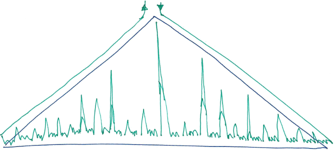

Zipped finger tree
Nota: por brevedad y en general, cualquier afirmación en este blog
Siempre me ha llamado la atención que no haya disponibles en los lenguajes estructuras eficientes para acceder, insertar y eliminar elementos en una lista indizada cuando son precisamente esas operaciones de las más utilizadas. Es cierto que ArrayList cubre decentemente el hueco ya que es raro tener cientos de miles de elementos y desplazar un array de punteros aunque lineal, es muy rápido en cualquier procesador. Sin embargo, si tenemos muchos elementos o la operación debe efectuarse muy rápidamente ¿qué estructura usamos?
Los números de la suerte
José A. Alonso propuso hace un tiempo un bonito problema que consiste en enumerar los Números de la suerte.
Los números de la suerte son una de tantas sucesiones de números naturales que se generan mediante algún procedimiento, en este caso, partimos de los números naturales, situamos un cursor en el índice 1 y fijamos un salto de 2, entonces hacemos indefinidamente:
- eliminar todos los elementos en los índices k * salto (para k = 1, 2, 3, …).
- incrementamos una posición el cursor y ahora el salto es el valor apuntado por el cursor.
- repetimos indefinidamente.
Tenemos:
1 2 3 4 5 6 7 8 9 ...
^ * * * *Y queda:
1 3 5 7 9 11 13 15 17 19 21 ...
^ * * *Y queda:
1 3 7 9 13 15 19 21 ...
^ *Por lo que los números de la suerte son:
1, 3, 7, 9, 13, 15, 21, ...Aunque no tengo ni idea sobre Teoría de cribas, cláramente estamos frente a una, y como en ¿todas? ellas podemos acumular los saltos para aplicar no paso a paso sino un conjunto de pasos simultáneamente (en inglés creo que while sieves no se en Español).
En el ejemplo anterior, tenemos saltos de a 2, una vez aplicados haremos saltos de a 3, lo que significa que haremos un salto justo antes de terminar 3 veces los 2 saltos (mira el 5 en el primer “tenemos” y en el primer “y queda”) significa que los saltos múltiplos de 3 los unimos y donde tenemos 2, 2, 2, 2, … ahora tenemos 2, 2+2, 2, 2+2, … y quedan los saltos unidos 2, 4, 2, 4, … Es decir, en lugar de aplicar primero los saltos de a 2 y luego los de a 3, podemos aplicar en ciclo los saltos: 2, 4, 2, 4, 2, 4, … Hagámoslo:
1 2 3 4 5 6 7 8 9 10 11 12 13 14...
^ * * * * * * * * *Y en un sólo paso queda como esperábamos:
1 3 7 9 13 ...
^En general, si tenemos un ciclo w (wheel como “2, 4” cuando hemos unido 2 y 3) para añadir el siguiente dado otro nuevo n no siempre hace falta expandirlo a |w| * n, pues si |w| y n comparten factor es porque el ciclo se repite y tanto da tener como ciclo “2, 4, 2, 4” que “2, 4”, por ejemplo, el ciclo una vez añadido 7 tiene tamaño |w|=12 por lo que al multiplicar por el siguiente (el 9) daría 96 números, pero como comparten el 3, podemos reducirlo a 32, véamoslo:
7: +2+4+2+4+2+6+4+2+4+2+4+6
9: +2+4+2+4+2+6+4+6+2+4+6+2+4+2+4+8+4+2+4+2+4+6+2+6+4+2+6+4+2+4+2+10Así, para obtener el siguiente ciclo repetiremos el actual tantas veces como el mínimo común múltiplo de ambos (que en el peor caso será el propio producto).
Entonces, el algoritmo que propongo mantiene a la vez la lista de números naturales (que únicamente consiste en un cursor n), el índice del número de la suerte en curso (que únicamente consiste en un índice x) y el ciclo de saltos que debe hacerse para obtener el siguiente n a cada x=x+1. Para cada nuevo número de la suerte estamos aplicando, simultánemente, todas las operaciones descritas anteriormente.
El finger tree
Mantener dos contadores (n y x) no es nada costoso, pero la longitud de nuestro ciclo crece factorialmente (casi el producto de los números de la suerte) por lo que debemos poder repetirlo z veces eficientemente. Además una vez repetido z veces, debemos juntar dos saltos a cada n (que requiere eliminar una posición y actualizar otra sumando ambas).
Repetir z veces un ArrayList o cualquier estructura s mutable implica O(z * |s|) operaciones, pero hacerlo en un árbol (de tipo F) inmutable es sencillo y eficiente:
repeatF :: Int ->F ->F
repeatF n f = case n `divMod` 2 of
(0, 1) ->f
(d, 0) ->t .^. t where t = repeatF d f
(d, 1) ->t .^. t .^. f where t = repeatF d fAhora bien, si usamos un árbol para almacenar los saltos que debemos aplicar a un número feliz n para obtener el siguiente ¿como accedemos eficientemente al salto x-ésimo? (para hacer n’ = n + salto!!x). Aquí es donde interviene el Finger Tree.
Básicamente un finger tree es un árbol que mantiene los datos en las hojas y en los nodos alguna operación de agregado. En nuestro caso, para indexar rápidamente, los nodos almacenarán el número total de elementos que contienen sus árboles izquierdo y derecho, quedando en un tipo como:
data F = N { fN_ :: !Int -- el número de elementos (hojas) que posee éste árbol (nodo)
, fL :: !F -- el árbol izquierdo
, fR :: !F } -- el árbol derecho
| L { fV :: !Int } -- una hoja con su dato (el salto a aplicar a `n` para obtener el siguiente)
deriving ShowPara alcanzar el elemento con índice x basta ir bajando a izquierda o derecha según el acumulado de los agregados sea menor o mayor:
index :: F ->Int ->Int
(L n ) `index` 1 = n
(N _ l r) `index` x = if x <= fN l then l `index` x else r `index` (x - fN l)Esta operación tiene coste O(log |w|).
El zipper
Si fuéramos a hacer lo evidente (bajar por el árbol para eliminar y actualizar los saltos que toquen) podríamos usar cualquier implementación eficiente de finger tree (como Data.Sequence en Haskell). En su lugar haremos algo más divertido ¡y muchísimo más eficiente!
Un zipper (cremallera) es como dejar miguitas de pan mientras vamos a algún sitio para poder desandar el camino andado. No encuentro en el mundo imperativo tradicional nada parecido, me viene a la mente las listas o árboles doblemente enlazados que te permiten moverte por ellas en cualquier sentido dado cualquier elemento pero el zipper no es exactamente eso. El zipper no requiere que la estructura tenga información (el anterior en las listas y el nodo padre en los árboles) sino que va generando las miguitas de pan el zipper mismo.
El tipo de nuestro zipper es éste:
data H = LH !Int !F -- un agujero a la izquierda del árbol
| RH !Int !F -- un agujero a la derecha del árbol
deriving Show
data Z = Z !Int !F [H] -- el árbol actual y la pila de los agujeros que hemos ido dejando
deriving ShowCon ese zipper, realizar las operaciones que nos interesan (subir al padre, bajar a la izquierda o bajar a la derecha) se implementan como:
goRight, goLeft, goUp :: Z ->Z
goRight (Z a (N _ l r) zs) = Z (a + fN l) r (RH a l: zs)
goLeft (Z a (N _ l r) zs) = Z a l (LH a r: zs)
goUp (Z _ r (RH a l: zs)) = Z a (l .^. r) zs
goUp (Z _ l (LH a r: zs)) = Z a (l .^. r) zs
goUp z@(Z _ _ [] ) = zLo que vamos a hacer con el zipper es ir a la posición más a la derecha del árbol (dado que vamos a eliminar elementos por posición, debemos hacerlo por la derecha) y en lugar de bajar y subir desde la raíz para cada elemento a eliminar, el zipper nos permite subir únicamente hasta dónde hace falta. Algo como (disfruta de mis ártes pictóricas):

Cuando n es pequeño el coste por eliminación y actualización no es del esperado O(log |w|) sino aproximadamente de O(log n) y cuando n es grande (ej. mayor que |w|) obviamente no puede superar O(log |w|). Dado que el tamaño del ciclo crece factorialmente, para 10 expansiones de ciclo ya tenemos que |w| > 3e8 que sería 2x29=58 operaciones cada eliminación+actualización, de esta forma para los números iniciales sólo se hacen 1+7=8 operaciones (las 7 de llegar a eliminar y 1 de ir al anterior a actualizar).
Por último, como los índices son eliminados con distribución uniforme en el ciclo, no hace falta (no parece merecer la pena) que balanceemos el árbol, por lo que la gestión de las operaciones es muy sencilla. Por ejemplo, hacer el ajuste completo del ciclo para unificar las posiciones n es:
goto :: (Int ->Z ->Z) ->Int ->Z ->Z
goto f i z@(Z a (N s l r) zs)
| a < i && i <= (a + fN l) = f i $ goLeft z
| a < i && i <= (a + s) = f i $ goRight z
| null zs = z
| otherwise = f i $ goUp z
adjust :: Int ->F ->F
adjust d m = (unzipper . doRemove lasti . zipper) m
where lasti = fN m - fN m `mod` d
doRemove i (Z _ (L n) (RH a l: zs)) = doAdd n (i - 1) $ goUp (Z a l zs)
doRemove i (Z _ (L n) (LH a r: zs)) = doAdd n (i - 1) $ goUp (Z (a - 1) r zs)
doRemove i z = goto doRemove i z
doAdd n' i (Z a (L n) zs ) = doRemove (i - d + 1) $ goUp $ Z a (L (n + n')) zs
doAdd n' i z = goto (doAdd n') i zDado un n, expandir un ciclo y ajustarlo sería como hemos dicho repetirlo ciertas veces y reducirlo:
expand :: Int ->F ->F
expand n f = adjust n $ repeatF r f
where s = fN f
r = lcm s n `div` sPara generar los números de la suerte podríamos hacer crecer (expandir) el ciclo a cada nuevo n pero al crecer factorialmente habrá que poner un límite, por lo que expandiremos un número pequeño de veces (ej. con 10 expansiones podemos calcular números de la suerte entorno 1e10) y ya con ese ciclo sin expandirlo más podemos ir reduciendo los ciclos para obtener nuevos números (pero sin expandir).
lucky :: Int ->[Int]
lucky expansions = r 1 (fromList [2]) 1 expansions
where r n f i 0 = a n f i
r n f i z = n: r n' (expand n' f) (i + 1) (z - 1)
where n' = n + fromIntegral (f `index` i)
a n f i = if i > fN f
then [n]
else n: a n' (adjust n' f) (i + 1)
where n' = n + fromIntegral (f `index` i)Y ya está, podemos ver la siguiente lista con el nº de números de la suerte, máximo nº calculado, segundos en calcularlos todos y memoria utilizada:
expansión nºs calculados máx nº de la suerte segundos memoria (Kb)
----------------------------------------------------------------------------
1 2 7 0,00 3.372
2 11 43 0,00 3.240
3 26 127 0,00 3.360
4 231 1.639 0,00 3.556
5 940 8.191 0,00 3.868
6 2.478 24.571 0,00 4.012
7 10.571 122.851 0,01 5.792
8 247.904 3.808.351 1,24 48.920
9 2.330.996 41.891.851 18,69 487.148
10 31.946.593 670.269.601 366,27 7.451.480Código completo de con algunos speedups y acotaciones en numeros-de-la-suerte.hs.
Algunos números de la suerte:
1, 3, 7, 9, 13, 15, 21, 25, 31, 33, 37, 43, 49, 51, 63, 67, 69, 73, 75, 79, 87, 93, 99, 105, 111, 115, 127, 129, 133, 135, 141, 151, 159, 163, 169, 171, 189, 193, 195, 201, 205, 211, 219, 223, 231, 235, 237, 241, 259, 261, 267, 273, 283, 285, 289, 297, 303, 307, 319, 321, 327, 331, 339, 349, 357, 361, 367, 385, 391, 393, 399, 409, 415, 421, 427, 429, 433, 451, 463, 475, 477, 483, 487, 489, 495, 511, 517, 519, 529, 535, 537, 541, 553, 559, 577, 579, 583, 591, 601, 613, 615, 619, 621, 631, 639, 643, 645, 651, 655, 673, 679, 685, 693, 699, 717, 723, 727, 729, 735, 739, 741, 745, 769, 777, 781, 787, 801, 805, 819, 823, 831, …
Referencias
- Finger tree en en Wikipedia
- 2-3 finger tree
- Finger-Trees una presentación de Edward Kmett @kmett
- Zippers en Haskell